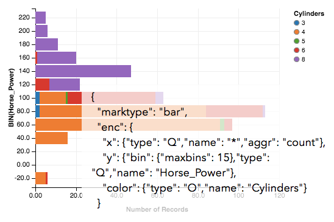

Declarative Toolkits
Vega
is a visualization grammar, a declarative format for creating, saving and sharing visualization designs.
With Vega you can describe data visualizations in a JSON format, and
generate interactive views using either HTML5 Canvas or SVG.

Vegalite
is a high-level grammar for visual analysis, built on top of Vega.
Vegalite provides ease-of-use comparable to tools like ggplot or Tableau, but generates full-featured Vega specifications as output.
User Interface Tools
Lyra
is an interactive environment that enables custom visualization design without writing any code,
allowing designers to create custom visualizations that are
comparable to hand-coded visualizations built with D3 or Processing.